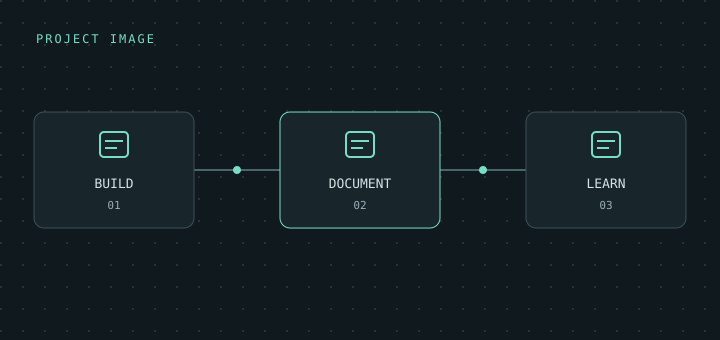

Operating systems
Linux · Windows · Ubuntu Server · Kali Linux
A STUDENT. A LAB. A LOT TO LEARN.
Cybersecurity Student | Networking | Linux
| Blue Team | Security Engineering
I build hands-on labs to understand how systems work, where they break, and how to defend them. This is where I document the process.
01 / SELECTED WORK
Projects, experiments, and lessons
from figuring things out.
02 / ABOUT ME
I'm a student learning cybersecurity through personal projects and hands-on labs. I like setting something up, finding out why it doesn't work, and staying with the problem until it makes sense.
My interests span networking, Linux, virtualisation, Python, and Docker. I'm especially interested in defensive security, SOC operations and analysis, SIEM tools such as Wazuh, and security engineering. I also explore web security and penetration testing in authorised environments.
For me, the useful part is the process: build, experiment, break things safely, troubleshoot, and document what I learn.
03 / MY TOOLBOX
A mix of hands-on practice and topics
I'm exploring. Always learning.
Linux · Windows · Ubuntu Server · Kali Linux
TCP/IP · Subnetting · Routing · DHCP · DNS · NAT · SSH
Wazuh · SIEM · Log analysis · Wireshark · Nmap
Exploring threat hunting & incident investigation
Python · Bash · HTML · CSS · JavaScript
VMware · KVM/QEMU · Docker
Git · GitHub · Cisco Packet Tracer · Apache
04 / LEARNING JOURNEY
I prefer learning by building, breaking,
troubleshooting, and documenting systems
rather than only reading theory.
Networking and Linux: following packet flow, configuring services, and understanding what the logs are telling me.
Blue Team and SOC workflows: exploring SIEM investigation and how individual events fit into a bigger picture.
Security engineering: connecting what I learn about monitoring, hardening, and automation.
05 / CONTACT
Interested in the projects, or learning something similar?
